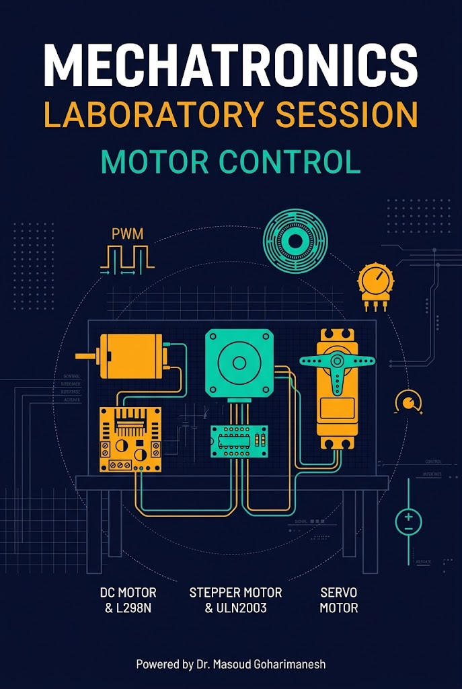
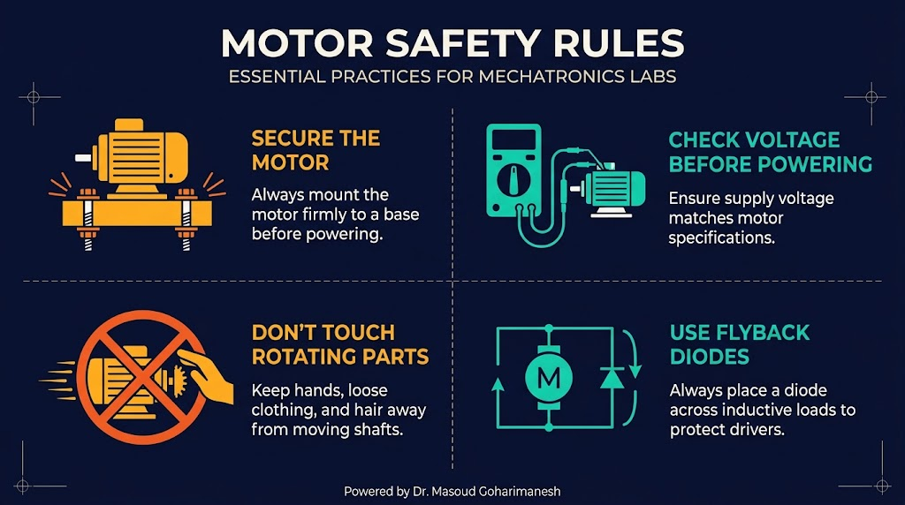
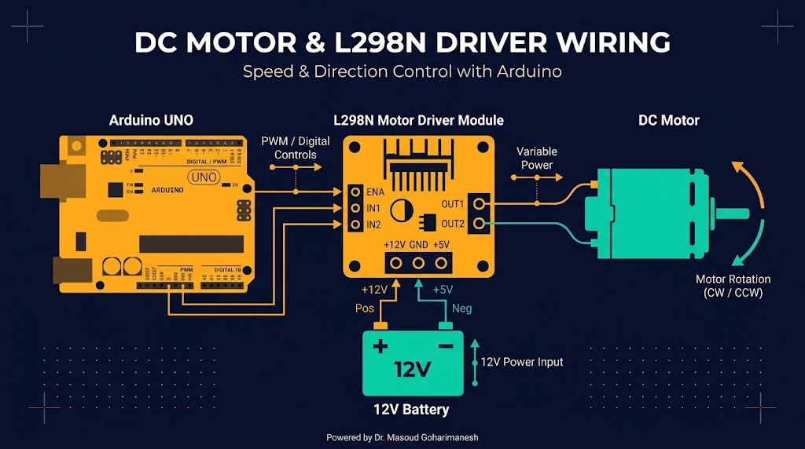
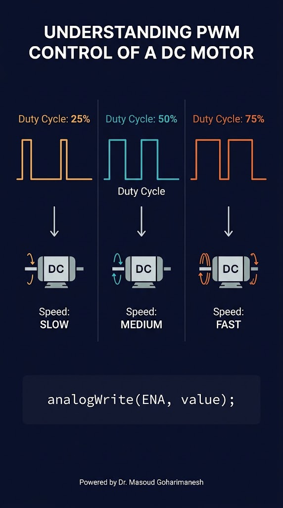
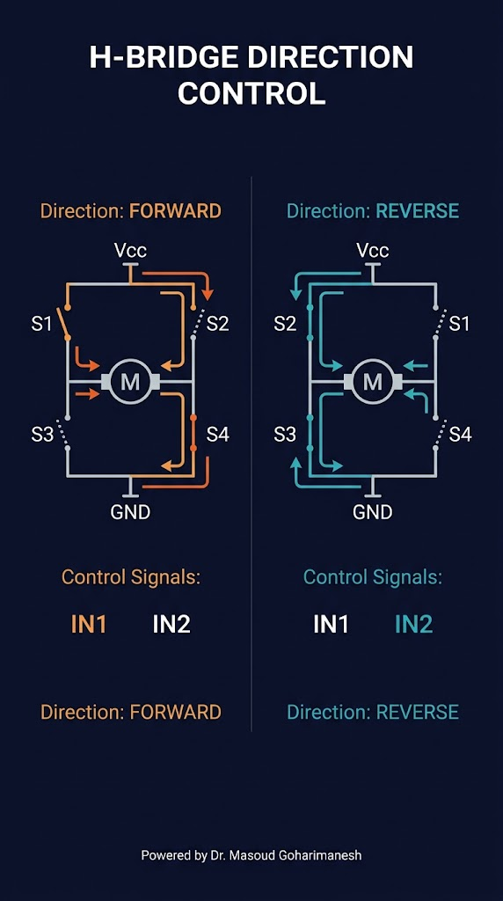
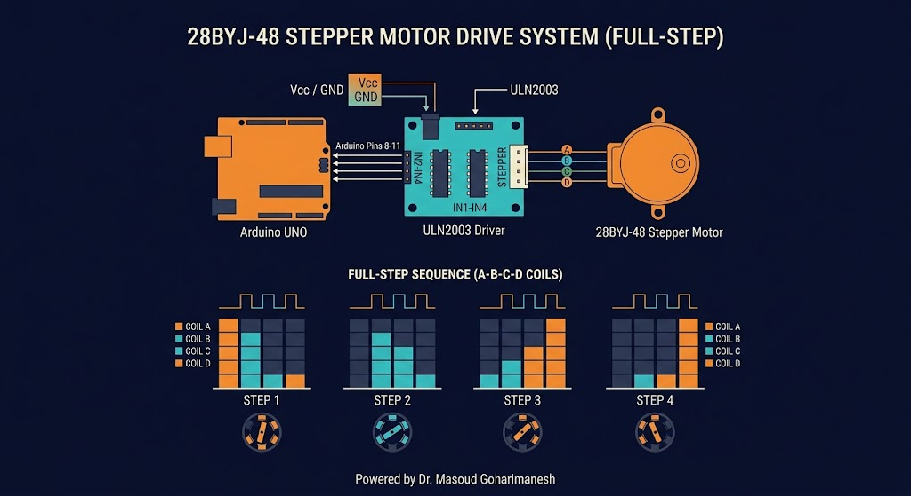
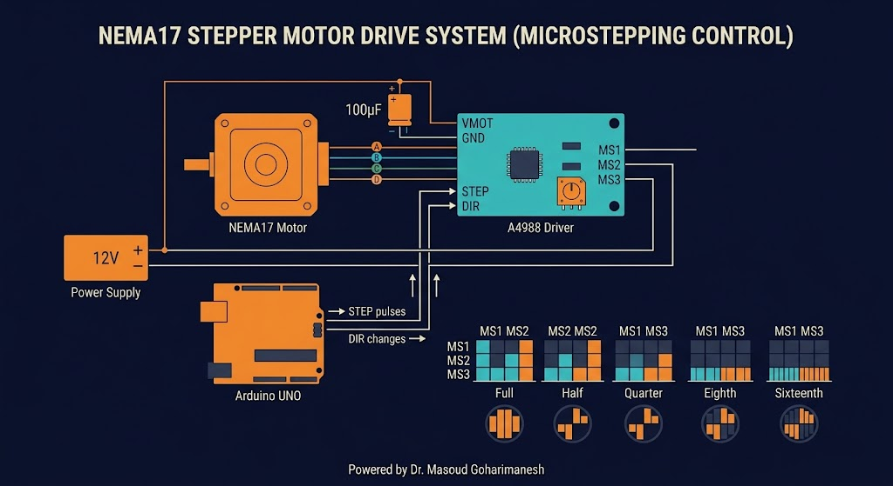
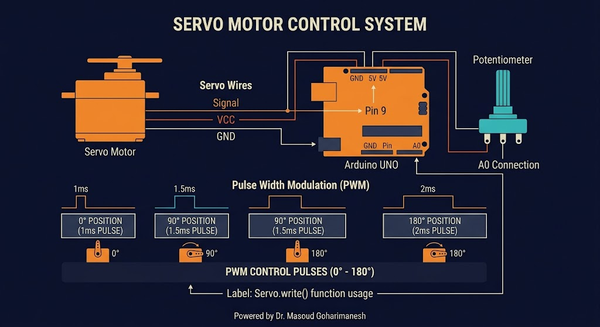

موتور DC، استپر، سروو — کنترل عملی
دکتر مسعود گوهریمنش
دانشیار گروه مهندسی مکانیک
دانشگاه تربت حیدریه | پاییز ۱۴۰۵
یک ربات بدون موتور، فقط یک مجسمه است!
برای کنترل دقیق موقعیت یک مفصل ربات، از کدام موتور استفاده میکنید؟ چرا؟
قبل از شروع، این نکات را رعایت کنید

سادهترین و پرکاربردترین درایور

#define IN1 8
#define IN2 9
#define ENA 10
void setup() {
pinMode(IN1, OUTPUT);
pinMode(IN2, OUTPUT);
pinMode(ENA, OUTPUT);
}
void loop() {
// حرکت به جلو
digitalWrite(IN1, HIGH);
digitalWrite(IN2, LOW);
analogWrite(ENA, 200); // سرعت 200/255
delay(2000);
// توقف
digitalWrite(IN1, LOW);
digitalWrite(IN2, LOW);
delay(1000);
// حرکت به عقب
digitalWrite(IN1, LOW);
digitalWrite(IN2, HIGH);
analogWrite(ENA, 200);
delay(2000);
}
از ۰ تا حداکثر سرعت

void loop() {
// افزایش سرعت تدریجی
for (int speed = 0; speed <= 255; speed += 5) {
analogWrite(ENA, speed);
delay(50);
}
// کاهش سرعت تدریجی
for (int speed = 255; speed >= 0; speed -= 5) {
analogWrite(ENA, speed);
delay(50);
}
}
نکته: PWM با فرکانس ~490Hz روی پین ENA. Duty Cycle بین 0 تا 255.
H-Bridge — دو جهت

| IN1 | IN2 | وضعیت |
|---|---|---|
| HIGH | LOW | جلو (Forward) |
| LOW | HIGH | عقب (Reverse) |
| LOW | LOW | توقف (Coast) |
| HIGH | HIGH | ترمز (Brake) |
بازخورد برای کنترل حلقهبسته
volatile unsigned long pulseCount = 0;
unsigned long lastTime = 0;
float rpm = 0;
void countPulse() {
pulseCount++;
}
void setup() {
Serial.begin(9600);
pinMode(2, INPUT_PULLUP);
attachInterrupt(digitalPinToInterrupt(2), countPulse, RISING);
}
void loop() {
unsigned long now = millis();
if (now - lastTime >= 1000) {
// PPR = پالس در دور (مثلاً 20)
rpm = (pulseCount * 60.0) / 20;
Serial.print("RPM: ");
Serial.print(rpm);
Serial.print(" | Pulses: ");
Serial.println(pulseCount);
pulseCount = 0;
lastTime = now;
}
}
استپر Unipolar (28BYJ-48)

#include <Stepper.h>
const int stepsPerRev = 2048;
Stepper myStepper(stepsPerRev, 8, 10, 9, 11);
void setup() {
myStepper.setSpeed(10); // RPM
}
void loop() {
myStepper.step(stepsPerRev); // یک دور کامل
delay(1000);
myStepper.step(-stepsPerRev); // برگشت
delay(1000);
}
استپر Bipolar (NEMA17)

پتانسیومتر روی A4988 را با مولتیمتر تنظیم کنید. Vref = I_max × 8 × R_sense. معمولاً Vref ≈ ۰.۵ تا ۱ ولت برای NEMA17.
MS1/MS2/MS3: 1/1، 1/2، 1/4، 1/8، 1/16 — هرچه بالاتر، حرکت نرمتر اما گشتاور کمتر.
#define STEP_PIN 3
#define DIR_PIN 4
void setup() {
pinMode(STEP_PIN, OUTPUT);
pinMode(DIR_PIN, OUTPUT);
}
void loop() {
digitalWrite(DIR_PIN, HIGH); // جهت
for (int i = 0; i < 200; i++) {
digitalWrite(STEP_PIN, HIGH);
delayMicroseconds(500);
digitalWrite(STEP_PIN, LOW);
delayMicroseconds(500);
}
delay(1000);
}
حرکت نرم و بیصدا
| MS1 | MS2 | MS3 | Microstep | پله در دور |
|---|---|---|---|---|
| LOW | LOW | LOW | 1/1 | ۲۰۰ |
| HIGH | LOW | LOW | 1/2 | ۴۰۰ |
| LOW | HIGH | LOW | 1/4 | ۸۰۰ |
| HIGH | HIGH | HIGH | 1/16 | ۳۲۰۰ |
کنترل زاویه ۰ تا ۱۸۰ درجه

#include <Servo.h>
Servo myServo;
void setup() {
myServo.attach(9); // پین 9
}
void loop() {
myServo.write(0); // زاویه 0
delay(1000);
myServo.write(90); // زاویه 90
delay(1000);
myServo.write(180); // زاویه 180
delay(1000);
myServo.write(90); // برگشت به 90
delay(1000);
}
کنترل دستی زاویه
#include <Servo.h>
Servo myServo;
void setup() {
myServo.attach(9);
}
void loop() {
int potValue = analogRead(A0);
int angle = map(potValue, 0, 1023, 0, 180);
myServo.write(angle);
delay(20);
}
نکته: سروو با پالس ۱-۲ms کار میکند. کتابخانه Servo این پالس را تولید میکند.
دقت بالا با بازخورد
#include <PID_v1.h>
double setpoint = 500; // RPM هدف
double input, output;
double Kp = 2, Ki = 5, Kd = 1;
PID myPID(&input, &output, &setpoint, Kp, Ki, Kd, DIRECT);
void setup() {
Serial.begin(9600);
pinMode(2, INPUT_PULLUP);
attachInterrupt(digitalPinToInterrupt(2), countPulse, RISING);
myPID.SetMode(AUTOMATIC);
myPID.SetOutputLimits(0, 255);
}
void loop() {
static unsigned long lastTime = 0;
if (millis() - lastTime >= 100) {
input = calculateRPM();
myPID.Compute();
analogWrite(ENA, output);
lastTime = millis();
}
}
کنترل موتور DC با PWM
PWM، جهت و بار را تغییر دهید تا رفتار موتور را ببینید.
جلسه نوزدهم - آزمایش موتورها
نکات کلیدی جلسه نوزدهم
جلسه بعد: برنامهنویسی میکروکنترلر (بخش اول) — دیجیتال، تایمر، وقفه
Powered by Dr. Masoud Goharimanesh